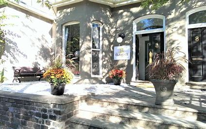

 

As for budget accommodation, we have a budget hotel at Clarence Square, Toronto, ON M5V 1H1, Canada named
The Clarence Park
for RM175/night. You can go to the CN Tower and the Ripley's Aquarium of Canada by foot.This low-cost lodging with views of Clarence Square is 10 minutes' walk from the CN Tower and 11 minutes' walk from the St. Andrew Station subway stop.
The modern private rooms and the straightforward, bright, mixed or female-only dormitories also have free Wi-Fi. Some rooms come with flat-screen TVs and/or private bathrooms. Bunk beds with privacy curtains are available in dorm rooms.
Among the amenities are a lounge, a rooftop terrace, a casual cafe, and a shared kitchen.